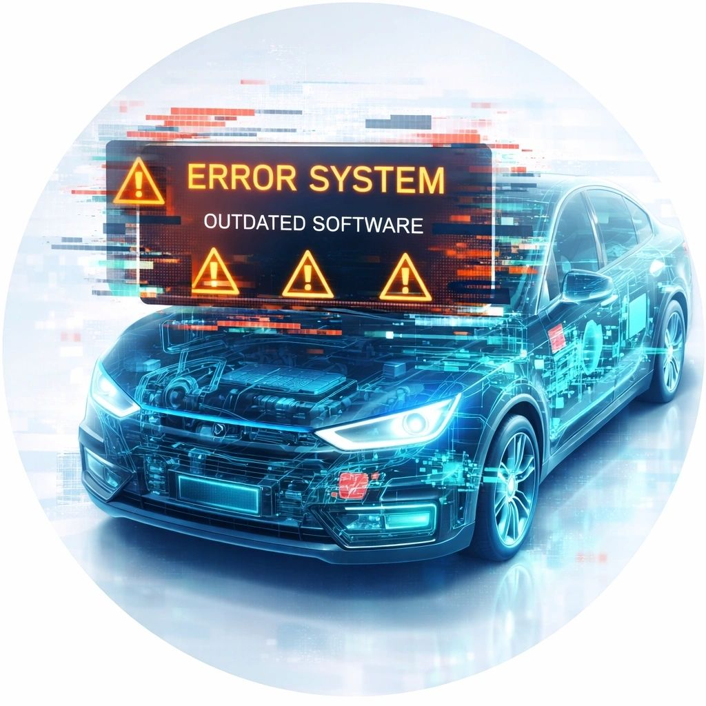

Блок не виходить на зв'язок
Потрібно зрозуміти: проблема в живленні, прошивці, конфігурації чи самому блоці.
Помилки електроніки
Знаходимо причину попереджень, збоїв і некоректної роботи електронних систем BYD. Пояснюємо, що критично, а що можна вирішити оновленням або калібруванням.
Для власника це виглядає як одна помилка, але причина може бути у зовсім іншому блоці.
Потрібно зрозуміти: проблема в живленні, прошивці, конфігурації чи самому блоці.
Системи можуть реагувати на старе ПЗ або некоректну синхронізацію.
Перевіряємо BMS, зарядний модуль, історію помилок і актуальність ПЗ.
Кузовні та електронні роботи часто потребують адаптації або оновлення.
Стерти код легко, але він повернеться, якщо причина лишилась. Через VDS дивимось ланцюжок подій, залежні системи і стан блоків.

Ми не залякуємо списком помилок. Пояснюємо, що означає кожен важливий пункт і який наступний крок має сенс.
Відділяємо наслідки від справжнього джерела проблеми.
Формуємо короткий список: що робити зараз, що можна відкласти.
Коли причина знайдена правильно, помилка не повертається одразу після стирання.
Можна надіслати фото помилки або відео поведінки авто до візиту.
Додаєте модель, рік, симптом або фото помилки.
Дивимось доступні оновлення, блоки та потрібний формат роботи.
Фіксуємо обсяг і ціну до початку втручання.
Після робіт перевіряємо системи і пояснюємо зміни.
Так, це навіть бажано. Додайте модель, рік, VIN і коли саме з'являється попередження.
Ні. Стирання без розуміння причини майже нічого не дає. Ми спочатку аналізуємо джерело.
Підкажемо, що саме потрібно перевірити або замінити. За потреби можемо підібрати деталь через напрям запчастин.
Іноді так. Але це вирішується після діагностики, а не навмання.